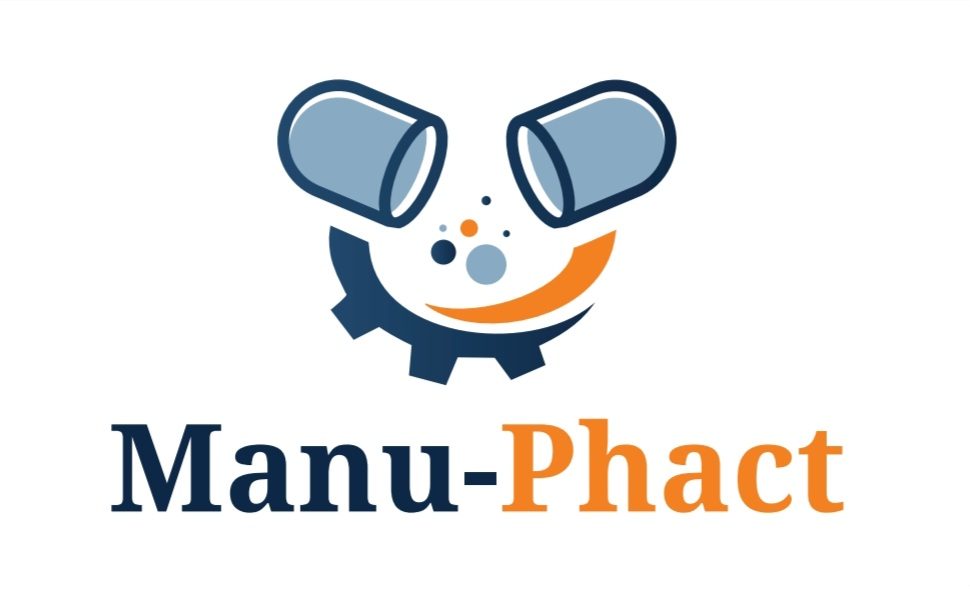

Manu‑Phact Pharmaceuticals develops high‑quality medicines designed to improve patient outcomes through advanced formulation science and accessible healthcare solutions.
Manu‑Phact Pharmaceuticals is a research‑driven pharmaceutical company dedicated to developing safe, effective and accessible medications. Our focus is on innovative drug delivery technologies that improve treatment adherence and patient safety.
All Manu‑Phact medicines are manufactured according to internationally recognised pharmaceutical quality standards and undergo rigorous safety and efficacy evaluation.
DuroFlo is a clinically formulated medication developed by Manu‑Phact Pharmaceuticals to support effective patient treatment and improved therapeutic outcomes.
Manu‑Phact is committed to improving medication accessibility for visually impaired patients.
Patients can scan the QR code on the medication leaflet or use the audio player below to hear spoken instructions for the safe use of DuroFlo.
This feature allows visually impaired patients to access medication information through spoken instructions.